CRVI001843François Morellet - Two Warps and Wefts of Short Lines 0°–90°
1956
1956
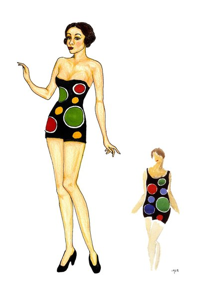
CRVI001721Sonia Delaunay - Fashion illustration

CRVI001618Pierre Bonnard - Family Scene
1893
1893

CRVI001482Francis Picabia - Dadaphone no. 7
Cover · 1920
Cover · 1920

CRVI001612Alphonse Mucha - Ornament
1901–2
1901–2

CRVI001842François Morellet - Bleu, vert, jaune, orange
1954
1954
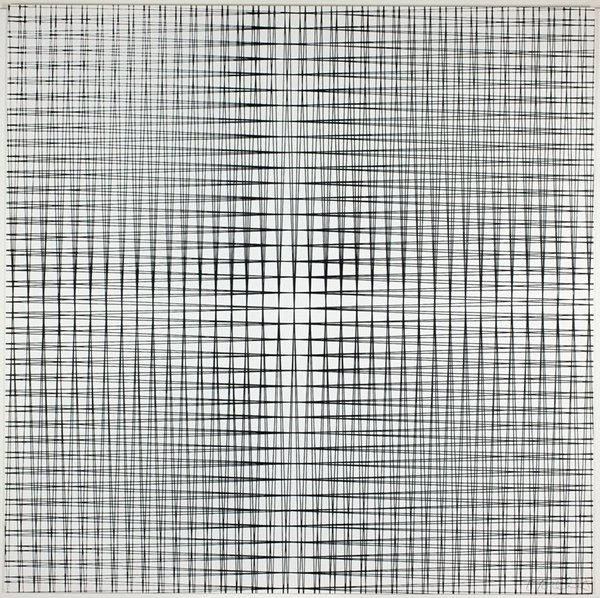
CRVI001844François Morellet - Trames
1965
1965

CRVI001652Juan Gris - Three Lamps
1911
1911
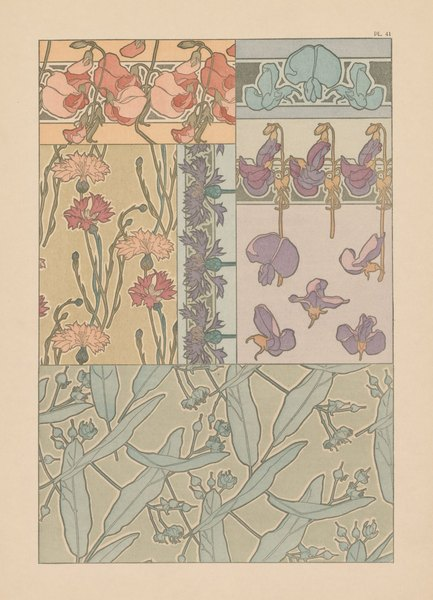
CRVI001614Alphonse Mucha - Documents Décoratifs: Plate 41
1901–2
1901–2

CRVI001611Alphonse Mucha - Lorenzaccio
Poster · 1896–1900
Poster · 1896–1900

CRVI001610Alphonse Mucha - Documents Décoratifs: Sweet Peas
1901–2
1901–2

CRVI001657Juan Gris - Guitar and Glass
1912
1912

CRVI001601Charles Angrand - End of the Harvest
c. 1892–1905
c. 1892–1905

CRVI001613Alphonse Mucha - Ilsée, Princesse de Tripoli
1897
1897

CRVI000877Maurice Denis - La Fontaine
Esquisse préparatoire du décor Terre Latine · peinture à l’essence sur papier calque collé sur toile · 1906–1908
Esquisse préparatoire du décor Terre Latine · peinture à l’essence sur papier calque collé sur toile · 1906–1908

CRVI001551Yves Tanguy - Indefinite Divisibility
1942
1942

CRVI001552Yves Tanguy - The Rapidity of Sleep
1945
1945

CRVI001827Victor Vasarely - Sinlag II (Blue with Red)

CRVI001825Victor Vasarely - Keiho-C1
1963
1963

CRVI001666Robert Delaunay - Rythme n° 1
1912
1912

CRVI000873John Provencher - [On, Clubhouse Paris]
On · Clubhouse Paris
On · Clubhouse Paris
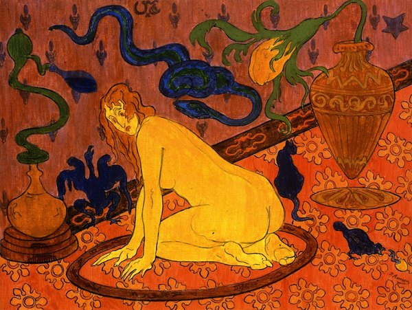
CRVI001619Paul Ranson - Nude on a patterned ground

CRVI001427Paul Signac - Woman with a Parasol
1893
1893

CRVI000879Maurice Denis - L’Oratorio pour « L’Éternel Printemps »
Oil on joined paper laid down on canvas · 142 × 201 cm · 1904
Oil on joined paper laid down on canvas · 142 × 201 cm · 1904
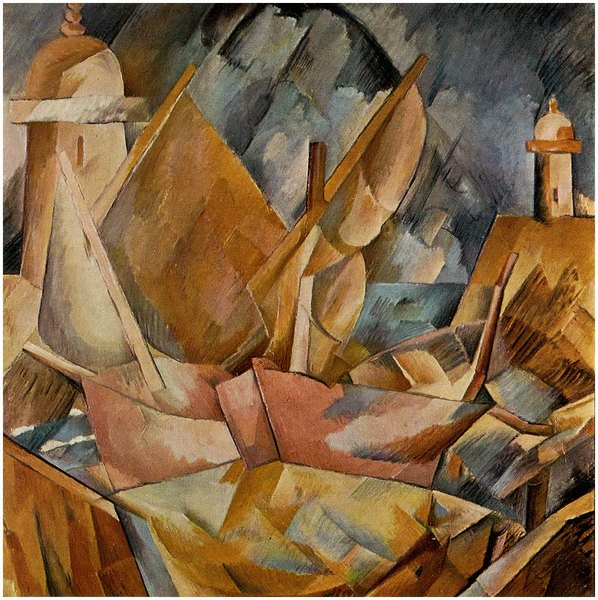
CRVI002192Georges Braque - Harbor in Normandy
1909
1909

CRVI001426Paul Signac - The Pine Tree at Saint-Tropez
1909
1909

CRVI001438Alphonse Mucha - Au Quartier Latin
Cover · 1898
Cover · 1898
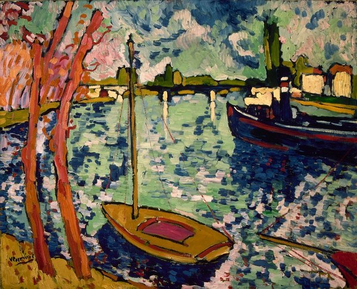
CRVI001625Maurice de Vlaminck - The River Seine at Chatou
1906
1906

CRVI001617Alphonse Mucha - Zodiaque (La Plume)
Poster · 1896–97
Poster · 1896–97

CRVI001627Georges Braque - Fruit Dish
1908
1908
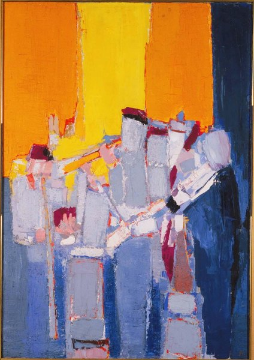
CRVI001773Nicolas de Staël - Musicians
1953
1953

CRVI001424Paul Signac - Opus 217. Against the Enamel of a Background Rhythmic with Beats and Angles, Tones, and Tints, Portrait of M. Félix Fénéon in 1890
1890
1890
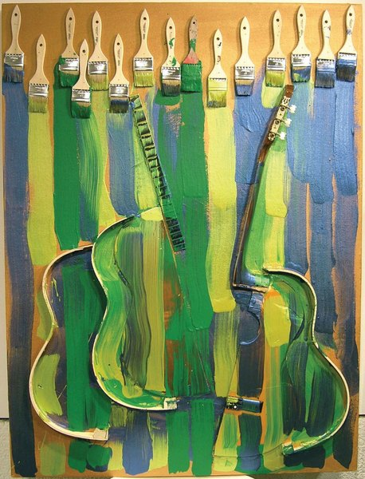
CRVI001801Arman - Violins
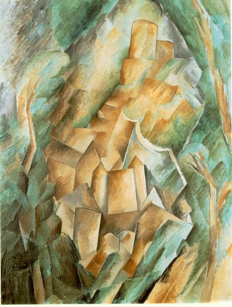
CRVI002191Georges Braque - Castle at La Roche-Guyon
1909
1909

CRVI001626Raoul Dufy - Self-Portrait
1899
1899
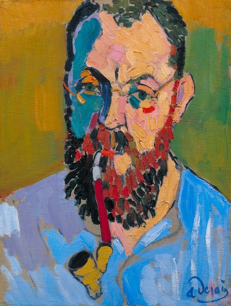
CRVI001623André Derain - Henri Matisse
1905
1905

CRVI001722František Kupka - Self-Portrait
1907
1907

CRVI001661Jean Metzinger - Femme assise au bouquet de feuillage
1905
1905

CRVI001667Robert Delaunay - Window
1912
1912

CRVI001553André Masson - L'homme emblématique
1939
1939

CRVI001853Ben Vautier - L'art est inutile / Pas d'art / À bas l'art

CRVI001478Vincent van Gogh - Madame Roulin and Her Baby
1888
1888

CRVI001477Vincent van Gogh - L'Arlésienne: Madame Joseph-Michel Ginoux (Marie Julien, 1848–1911)
1888–89
1888–89

CRVI001663Jean Metzinger - Bacchante
1906
1906

CRVI001475Paul Cézanne - The Pigeon Tower at Bellevue
1890
1890

CRVI001621Georges Lacombe - Marine bleue, Effet de vague
c. 1893
c. 1893
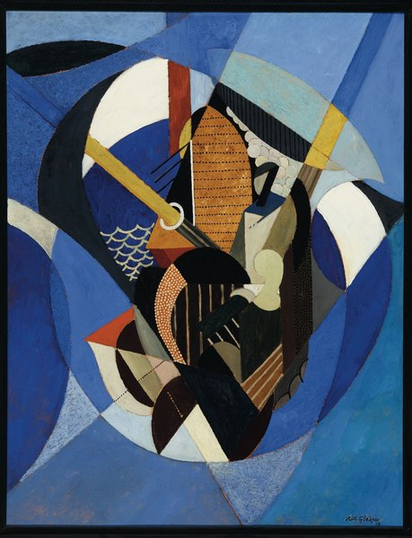
CRVI001659Albert Gleizes - On a Sailboat
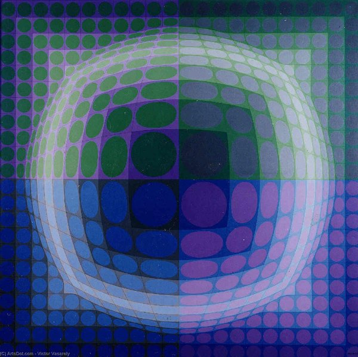
CRVI001826Victor Vasarely - Pal-Ket
1974
1974

CRVI001725František Kupka - Disks of Newton (Study for Fugue in Two Colors)
1911
1911

CRVI001772Georges Mathieu - Le Seuil monotone
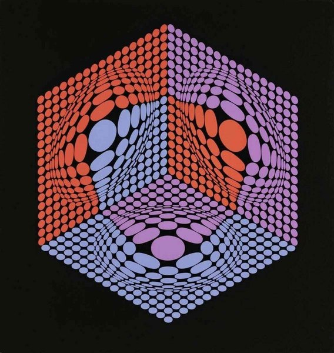
CRVI001828Victor Vasarely - Geometric composition
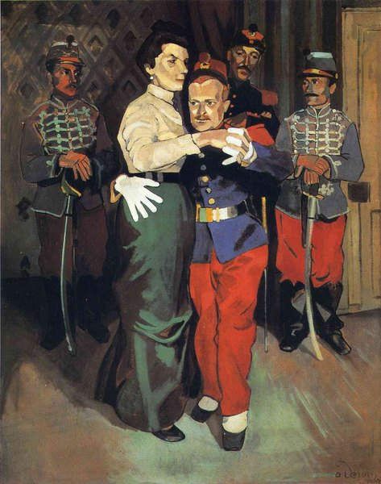
CRVI001622André Derain - Ball of Soldiers in Suresnes
1903
1903
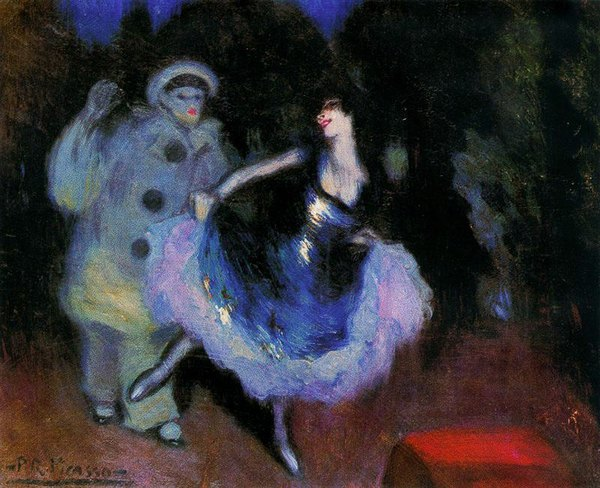
CRVI002197Pablo Picasso - Pierrot and Colombina
1900
1900

CRVI002195Pablo Picasso - The Barefoot Girl
1895
1895
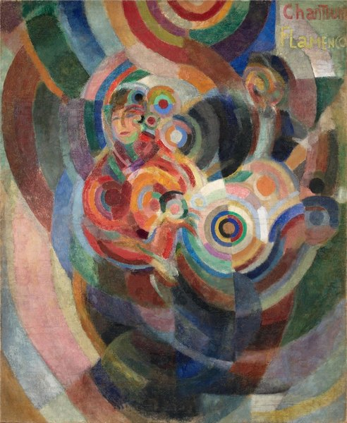
CRVI001720Sonia Delaunay - Flamenco Singers (Large Flamenco)
1915–16
1915–16

CRVI001669María Blanchard - La Comulgante (Girl at Her First Communion)
1914
1914

CRVI001651Juan Gris - Portrait of Maurice Raynal
1911
1911
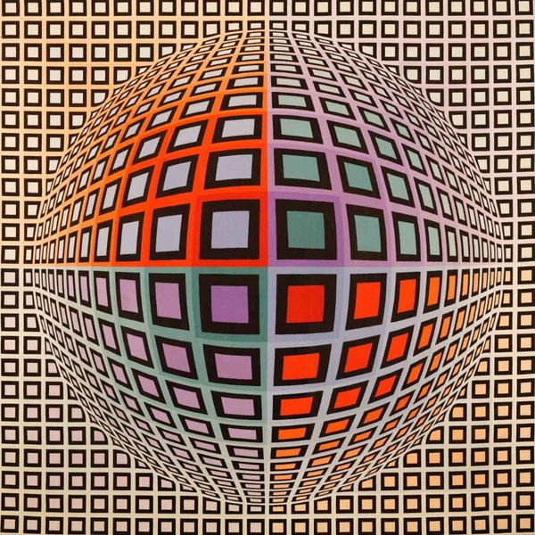
CRVI001829Victor Vasarely - Vega-Anneaux
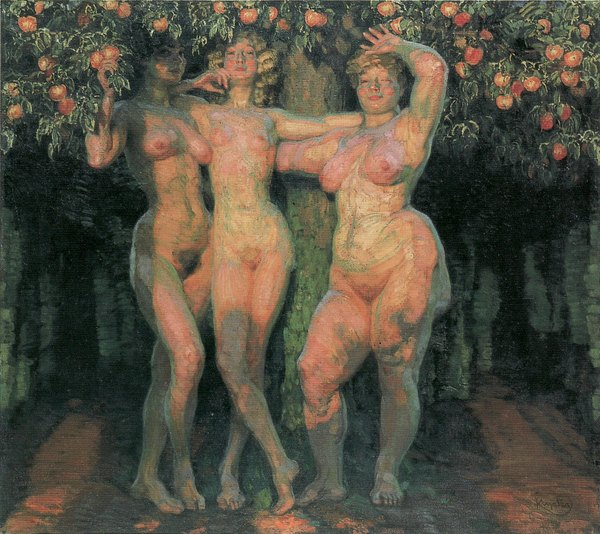
CRVI001724František Kupka - Autumn Sun — Three Goddesses
1906
1906

CRVI001629Othon Friesz - Rocky Coast
1896
1896
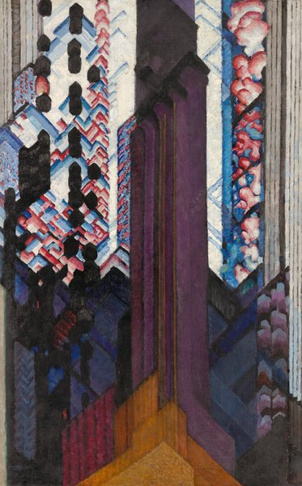
CRVI001726František Kupka - Reminiscence of a Cathedral
1920/23
1920/23

CRVI001472Gustave Courbet - Jo, La Belle Irlandaise
1866
1866
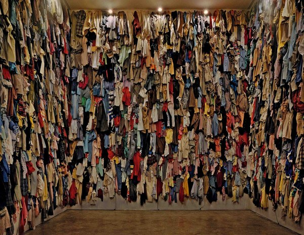
CRVI002110Christian Boltanski - Installation with hung clothing

CRVI001665Robert Delaunay - Champs de Mars: The Red Tower
1911/23
1911/23
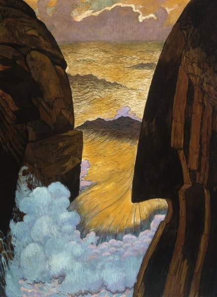
CRVI001620Georges Lacombe - The Green Wave (Vorhor)
1896
1896

CRVI001662Jean Metzinger - Woman with a Fan
1913
1913
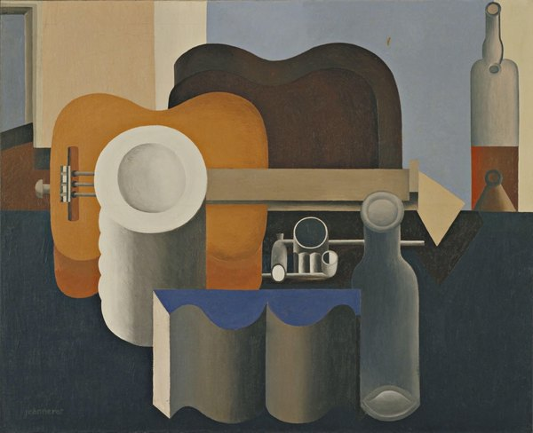
CRVI001768Le Corbusier - Still Life
1920
1920
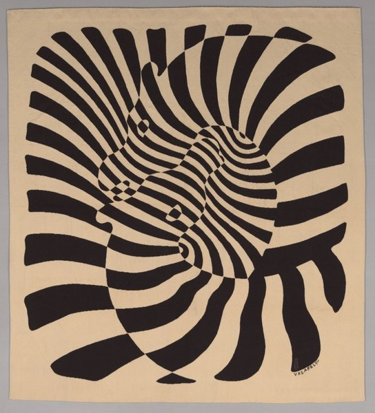
CRVI001824Victor Vasarely - Zèbres
1959
1959
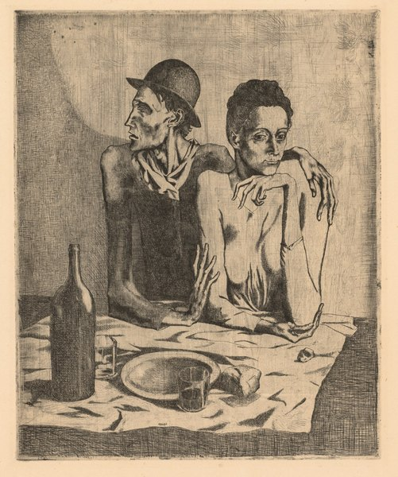
CRVI001649Pablo Picasso - The Frugal Meal
September 1904, printed 1913
September 1904, printed 1913

CRVI001656Juan Gris - Man in the Café
1912
1912

CRVI001597Georges Seurat - The Mower
1881–82
1881–82

CRVI001476Vincent van Gogh - The Large Plane Trees (Road Menders at Saint-Rémy)
1889
1889

CRVI001599Charles Angrand - The Western Railway at its Exit from Paris
1886
1886

CRVI001654Juan Gris - Portrait of the Artist's Mother
1912
1912
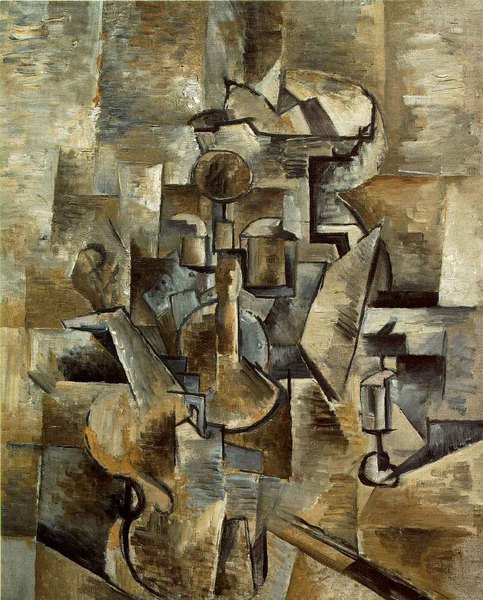
CRVI002193Georges Braque - Violin and Candlestick
1910
1910

CRVI001668María Blanchard - Still Life with a Box of Matches (Nature morte à la boîte d'allumettes)
1918
1918

CRVI000819Seymour Chwast - Push Pin Butcher
Mixed media · 46 × 74 cm · 1981
Mixed media · 46 × 74 cm · 1981

CRVI001660Albert Gleizes - Bermuda
1917
1917

CRVI001624André Derain - Still Life on the Table
1904
1904

CRVI001664Jean Metzinger - Petit port, pêcheurs et bateaux au quai
1906
1906

CRVI001550Yves Tanguy - Through Birds, Through Fire, but Not Through Glass
1943
1943

CRVI001481Henri Rousseau - Fight Between a Tiger and a Buffalo
1908
1908

CRVI001479Vincent van Gogh - La Berceuse (Woman Rocking a Cradle; Augustine-Alix Pellicot Roulin, 1851–1930)
1889
1889
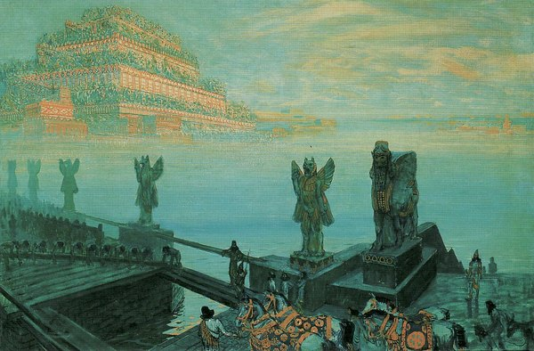
CRVI001727František Kupka - Babylon
1906
1906

CRVI000878Maurice Denis - Annonciation d’Assise
Huile sur carton · 54,5 × 72 cm · 1914
Huile sur carton · 54,5 × 72 cm · 1914
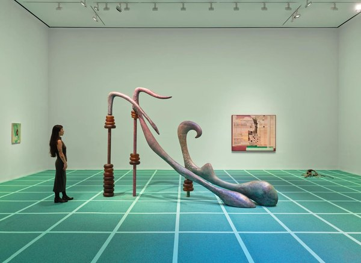
CRVI002081Camille Henrot - Installation view
2025
2025
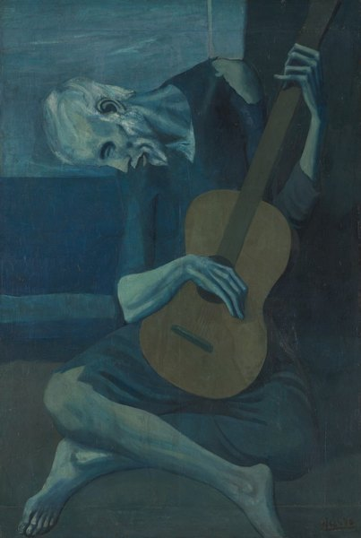
CRVI001648Pablo Picasso - The Old Guitarist
late 1903–early 1904
late 1903–early 1904

CRVI001655Juan Gris - Portrait of Germaine Raynal
1912
1912

CRVI001718Robert Delaunay - Paysage au disque solaire
c. 1906
c. 1906

CRVI001719Sonia Delaunay - Jazz
Dress or furnishing fabric · 1977 (designed 1920)
Dress or furnishing fabric · 1977 (designed 1920)

CRVI001448Jean Dubuffet - Untitled (Hourloupe)

CRVI001487Man Ray - Black and White (Noire et blanche)
1926
1926
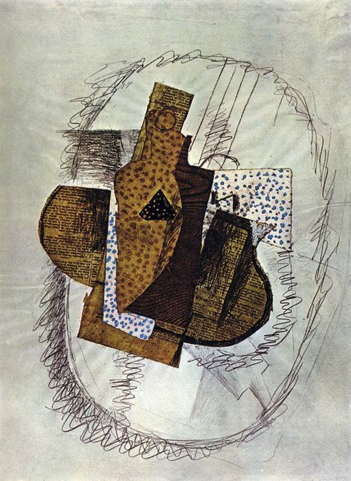
CRVI002194Georges Braque - Still Life with Bottle of Bass
1914
1914

CRVI001653Juan Gris - Bottles and Knife
1912
1912
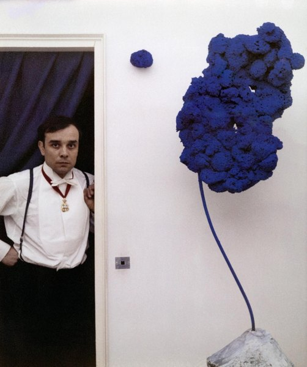
CRVI001800Yves Klein - Blue sponge sculpture

CRVI001449Jean Dubuffet - Site habité d'objets (Site Inhabited by Objects)
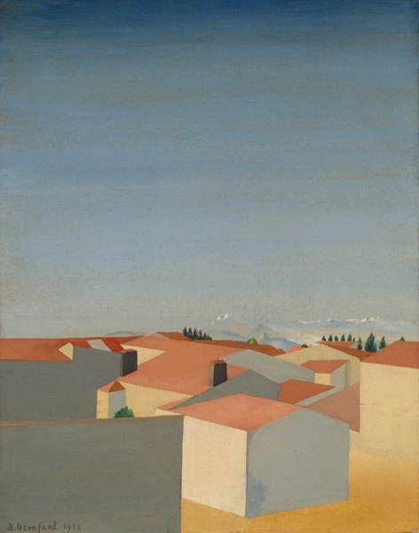
CRVI001769Amédée Ozenfant - Landscape (Bordeaux II)
1918
1918
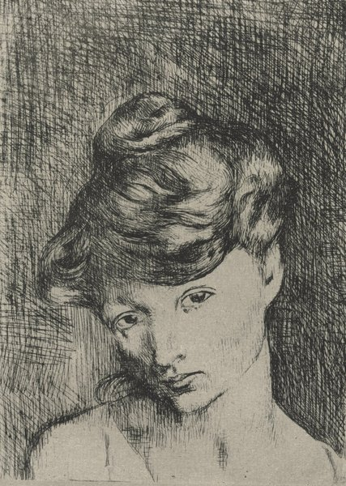
CRVI001647Pablo Picasso - Head of a Woman: Madeleine
1905, printed 1913
1905, printed 1913

CRVI001600Charles Angrand - Head of a Child (Emmanuel)
1898
1898

CRVI001650Juan Gris - Portrait of Pablo Picasso
January–February 1912
January–February 1912

CRVI001723František Kupka - Self-Portrait with Wife
1908
1908

CRVI001658Albert Gleizes - Football Players
1912
1912
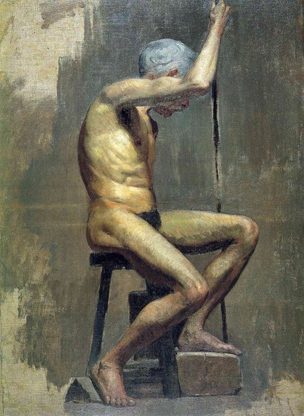
CRVI002196Pablo Picasso - Academical Study

CRVI001480Henri de Toulouse-Lautrec - May Belfort
1895
1895

CRVI001596Georges Seurat - At the Concert Parisien
1887–88
1887–88

CRVI001602Albert Dubois-Pillet - Portrait of Monsieur Pool
1887
1887

CRVI000830Seymour Chwast - Liberty
Artis 89 · offset · 60 × 84 cm
Artis 89 · offset · 60 × 84 cm